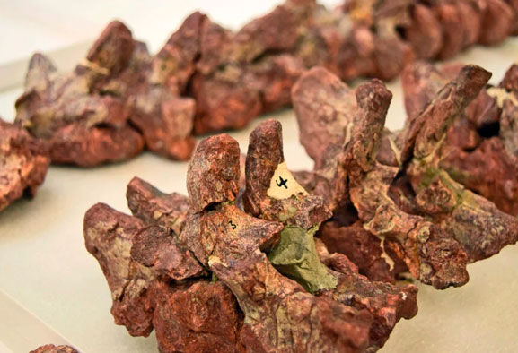
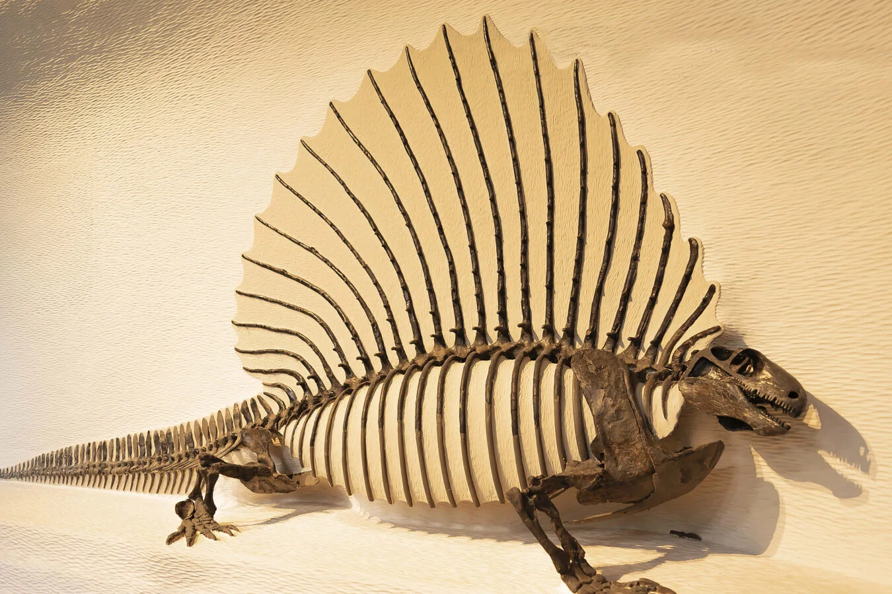

Fósseis | Quebrando espinhas
Publicado por Roni Wellington 21-08-2022 | Astronomia Estudo examina como a espinha dorsal dos mamíferos mudou durante a evolução
Praticamente qualquer aluno do ensino fundamental pode citar as características que tornam os mamíferos especiais: eles têm sangue quente, têm pêlo ou cabelo e quase todos nascem vivos.
Um novo estudo sugere que os mamíferos são únicos em mais uma maneira – a composição de suas espinhas.
Liderado pela Professora Associada de Biologia Organísmica e Evolutiva e curadora de paleontologia de vertebrados Stephanie Pierce e pela pesquisadora de pós-doutorado Katrine Jones, o estudo desafia a noção de que a especialização em espinha dorsal de mamíferos remota aos primeiros animais terrestre. A pesquisa é descrita em um artigo de setembro na Science.
“A coluna é basicamente como uma série de contas em uma corda, com cada conta representando um único osso – uma vértebra, disse Pierce”.
“Na maioria dos animais de quatros patas, como lagartos, as vértebras parecem e funcionam da mesma forma. Mas a espinha dorsal dos mamíferos é diferente. As diferentes seções ou regiões da coluna – como pescoço, tórax e região lombar – assumem formas muito diferentes. Eles funcionam separadamente e, portanto, podem se adaptar a diferentes modos de vida, como correr, voar, cavar e escalar”.
Para entender como essas regiões especializadas surgiram, Pierce e Jones decidiram examinar o registro fóssil.
“Não há animais vivos hoje que possam registrar a transição de um ancestral ‘semelhante a répteis’ para um mamífero”, disse Jones, principal autor do estudo. “Para fazer isso, devemos mergulhar no registro fóssil e observar os precursores extintos dos mamíferos, os sinapsídeos não-mamíferos”.
Mas estudar fósseis não é fácil.
Reconstrução do Edaphosaurus, um ancestral mamífero primitivo. A espinha dorsal tem espinhos incrivelmente longos, formando uma vela ao longo de suas costas. Stephanie E. Pierce/Museu de Zoologia Comparada de Harvard
“Os fósseis são escassos e encontrar animais extintos com mais de 25 vértebras no lugar é incrivelmente, incrivelmente raro”, explicou Jones. Para resolver esse problema, os pesquisadores vasculharam coleções de museus de todo o mundo para estudar os fósseis mais perfeitamente preservados de cerca de 320 milhões de anos atrás.
Pierce e Jones, juntamente com o co-autor Jen Angielczyk do Museu Field de Chicago, examinaram dezenas de espinhos fósseis, bem como mais de 1.000 vértebras de animais vivos, incluindo ratos, jacarés, lagartos e anfíbios.
O objetivo era testar se as regiões da coluna vertebral dos mamíferos eram tão antigas quanto se pensava anteriormente, ou se os mamíferos estavam fazendo algo único.
“Se as regiões vertebrais tivessem permanecido imutáveis ao longo da evolução, como hipotetizado, esperaríamos ver as mesmas regiões nos sinapsídeos não-mamíferos que vemos nos mamíferos hoje”, disse Pierce.
A evidência sugere que não é o caso. Quando os pesquisadores compararam o posicionamento e as formas das vértebras, descobriram algo surpreendente – a coluna ganhou regiões durante a evolução dos mamíferos.
“Os primeiros sinapsídeos não mamíferos tinham menos regiões do que os mamíferos vivos.” explicou Jones.
“Os primeiros sinapsídeos não mamíferos tinham menos regiões do que os mamíferos vivos.” explicou Jones.
Cerca de 250 milhões de anos atrás, uma nova região evoluiu nas proximidades dos ombros e das patas dianteiras, à medida que mudanças dramáticas começaram a aparecer nos membros anteriores de animais conhecidos como terapsídeos não-mamíferos. Essas mudanças simultâneas, acreditam Pierce e Jones, provavelmente ocorreram em conjunto com mudanças em como as criaturas andavam e corriam.
“Parece haver algum tipo de conversa cruzada durante o desenvolvimento entre os tecidos que formam as vértebras e a omoplata”, disse Pierce. “Nós levantamos a hipótese de que essa interação resultou na adição de uma região próxima ao ombro, à medida que os membros anteriores de nossos ancestrais evoluíram para assumir novas formas e funções”.
Mais tarde, surgiu uma região no ancestral dos mamíferos modernos perto da pélvis.
“É esta última região, a região lombar sem costelas, que parece se adaptar mais a diferentes ambientes”, acrescentou Pierce.. Essa etapa final na construção da espinha dorsal dos mamíferos pode estar ligada a mudanças nos genes Hox, o modelo genético para definir as regiões da coluna no início do desenvolvimento.
“O que acho emocionante aqui é que conseguimos fazer conexões entre mudanças nos esqueletos de animais extintos e ideias do desenvolvimento moderno e da genética”, disse Jones. “Esta abordagem combinada está nos ajudando a entender o que faz de um mamífero um mamífero.”
“Os mamíferos podem ser encontrados em continentes e oceanos ao redor do mundo”, disse Dena Smith, diretora do programa da Divisão de Ciências da Terra da National Science Foundation, que financiou a pesquisa. “Olhando para o passado antigo, uma mudança precoce na coluna vertebral dos mamíferos foi um primeiro passo importante em sua evolução. Mudanças na coluna vertebral ao longo do tempo permitiram que os mamíferos se desenvolvessem nas inúmeras espécies que conhecemos hoje.”
Artigo Original:The Harvard Gazette
Sobre o Autor

RoniWellington
Desenvolvedor Back-End com background multidisciplinar, sempre aprendendo mais para estar menos errado. Nas horas vagas me dedico à escrita, filosofia, ciência e às vezes um rolê de skate, corrida ou ciclismo.
 Contato
Contato Mensagem
MensagemDica de Livros

Astronomy Today
Autor: Chaisson Mcmillan ano:
Origens – 14 bilhões de anos de evolução cósmica
Autor: Neil deGrasse Tyson ano: 1ª edição(1 junho 2015)
Cosmos - Cosmos reúne alguns dos conhecimentos mais avançados da época sobre a natureza, a vida e o Universo
Autor: Carl Sagan Ano:Canais no YouTube

AstroTubers
ASTROTUBERS Astronomia
SpaceToday
Conteúdo científico temas variados
Ciência Todo Dia
Pedro Loos Conteúdo científicoPosts Relacionados


Como grandes cérebros são feitos
Como grandes cérebros são feitos Novo estudo rastreia o desenvolvimento
Ver Post